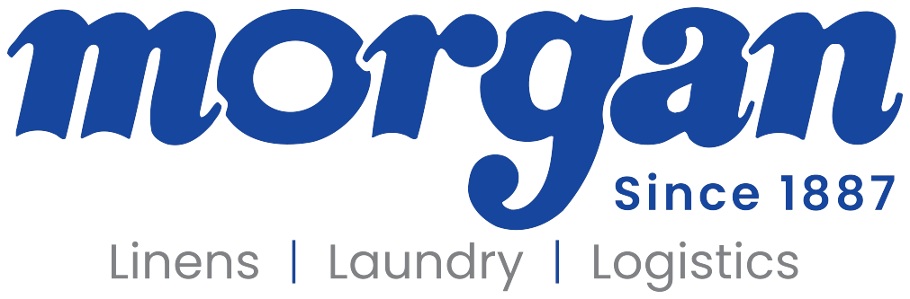
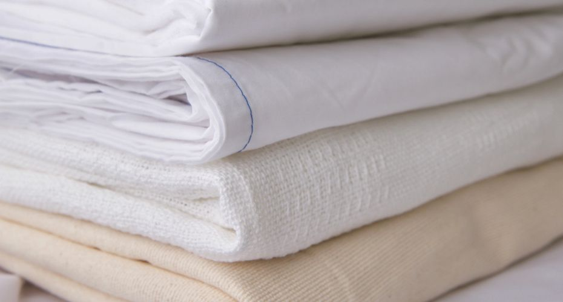

Industrial textile processing
High-volume commercial laundering. Healthcare work is described by Morgan as hygienically clean processing, inspected across the full cycle at HLAC-accredited plants.
A smarter way to manage linen, laundry and logistics. Talk to our digital team at Creative Tugs — creativetugs.com Book a meeting


Capabilities
Morgan handles linen and uniform rental, inventory, tracking, reporting, and logistics. The plants are company-owned.
High-volume commercial laundering. Healthcare work is described by Morgan as hygienically clean processing, inspected across the full cycle at HLAC-accredited plants.
Par, replacement, and on-hand product. Hospitality materials name ASA inventory management. Healthcare materials describe counts by customer and garments tracked for status, condition, and location.
Nearly 200 trucks. 1.8 million delivery miles a year. Routes set around the facility, including the off-hours scrub drop Sunrise Surgery Center described.
TRSA Clean Green across the coast-to-coast operation. HLAC at most facilities. Multiple checkpoints are part of how Morgan describes company-owned plants.
Morgan’s own line is that there is no one-size-fits-all program. Frequency, products, and inventory are set from the operation in front of them.
The published promise is practical: less waste, less loss, and enough information to decide. The planner on this concept is the front door for that conversation.
How a program gets built
From Morgan’s about page: sit down, understand how the business works, and build around requirements and goals. Service representatives stay close when the week changes.